휴대전화(주 사용 환경) — 아이폰 사파리, 안드로이드 크롬·삼성 인터넷. 설치·회원가입 없음. 홈 화면에 아이콘으로 추가해 앱처럼 열 수 있음
PC — 크롬·엣지·웨일 등 일반 브라우저. 오래된 행정망 브라우저에서도 열리도록 ES5 문법으로 작성
서버·DB·빌드 도구·외부 라이브러리 없음 — 정적 파일(HTML·JS·CSS)과 자료 파일(JS)뿐. 특별한 권장 사양 없음
인터넷이 있을 때만 더해지는 것 — 배경지도(브이월드, 안 되면 OpenStreetMap으로 자동 전환), 주소·장소 검색(브이월드), 도보 경로(OSRM 공개 서버). 없으면 그 기능만 빠지고 나머지는 그대로 동작(행정경계선 위에 표시)
설치·실행 절차심사위원 구동 순서
가장 쉬운 길 — 휴대전화: 휴대전화 카메라로 시연영상 끝의 QR을 비추거나 {{접속주소}} 열기 → 첫 화면 카드 01 대피장소 · 02 문자 · 03 방제 · 04 안전거리 중 하나를 누름
PC: 브라우저 주소창에 {{접속주소}} 입력 (넓은 화면에서도 같은 기능)
공공 GitLab 소스로 직접: 저장소 내려받기 → 뿌리의 index.html 더블클릭(파일로 바로 열림)
또는 그 폴더에서 python3 -m http.server 8000 실행 후 http://localhost:8000
인터넷이 안 되는 업무망 PC: dist/ 의 단일 HTML 4개(주민대피장소 찾기 · 주민대피문자 생성기 · 방제물품장비 찾기 · 현장안전거리 확인) 중 하나를 더블클릭
GitLab: {{gitlab}} · 화면 자동 검증: tests/run.sh(실제 크로미움으로 화면을 눌러 보는 20묶음, Node·Playwright 필요 — 구동에는 필요 없음)
LLM 연결 설정
해당 없음실행 중에는 AI 모델(LLM)을 부르지 않습니다. 키 입력·모델 연결 없이 위 절차만으로 구동됩니다.
왜 부르지 않나 — ① 재난문자는 승인받은 표준문안만 나가야 함(생성된 문장이 섞이면 안 됨) ② 인터넷이 끊긴 업무망 PC에서도 같은 결과 ③ 사고 현장에서 응답 지연·장애 없이 몇 초 안에 결과
AI는 만드는 단계에 썼습니다 — 개발자가 아닌 담당 공무원이 AI 코딩 도구(Claude Code)와 대화하며 직접 개발(바이브코딩). 흩어진 원자료 정리에도 AI를 썼습니다: 스캔 허가증 24건 판독, 표기가 제각각인 방제물품 이름(한 표에서만 484가지)을 표준 27가지로 정리, 원자료 속 담당자 실명 2,719건·개인 휴대전화 495건 제거, 물질정보 460종의 ERG 거리 글을 숫자로 읽는 규칙 작성(460종 전수 대조), 화면 자동 검증 20묶음 작성
모델 비종속 — 실행에 모델이 없으므로 특정 LLM에 묶이지 않습니다. AI 보조(예: 상황 메모로 문자 칸 채우기)를 붙인다면 공통기반 지원 모델로 바꿔 끼울 수 있는 선택 기능으로, 담당자가 확인한 뒤 반영하는 구조가 맞다고 봅니다
모의데이터 안내
별도 제출 없음서비스에 실린 자료로 바로 시연합니다. 개인정보는 들어 있지 않습니다(업체 담당자 이름·휴대전화는 빼고 대표번호·부서번호만 — 배포 전 기계로 검사).
자료
규모
출처
기준일
화학사고 대피장소
1,849곳
화학물질안전원 대피장소 목록
2026-05-19
이재민 임시주거시설
15,905곳
행정안전부 재난안전데이터공유플랫폼 오픈API
2026-09-08
방제자원 — 업체 섭외 / 방제물품
1,717건 / 4,075건
원내·유역환경청·지자체 현황 정리(2,341곳)
2026-09-14
사고물질 정보 · ERG 거리
460종
화학물질안전원 「화학사고 현장대응 물질정보」(2026) — 04 의 초기이격·방호활동 거리
—
재난문자 문안
—
주민대피 재난문자 표준문안(안)
—
행정경계선
—
통계청 센서스용 행정구역경계(2018) 단순화
—
시연 예시(영상과 같음): 전남 여수 주삼동 ○○화학 암모니아 누출 — 예시 상황(실제 사고 아님 · 실제 회사 이름을 쓰지 않음)
기능 사용 순서핵심 흐름 4개
흐름 1 주민 대피장소 찾기 — "주민을 어디로?"
카드 01 → 주소 입력(예: 여수시 주삼동) → 고른 뒤 지도를 한 번 눌러 사고지점 확정(동 단위는 어림 좌표라 자동 확정하지 않음)
한 줄 요약: 가장 가까운 곳 · 반경 1·2·5km 안 개수
화학사고 대피장소 / 이재민 임시주거시설 층을 나눠 켜고 끔
목록: 거리 · 도보시간 · 수용인원 · 관할부서 전화 → 한 곳을 고름
「이 내용으로 문자 만들기」 → 시·군·구와 대피장소를 채운 채 흐름 2로
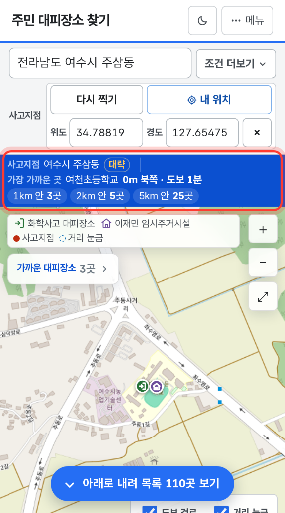
요약·반경별 개수
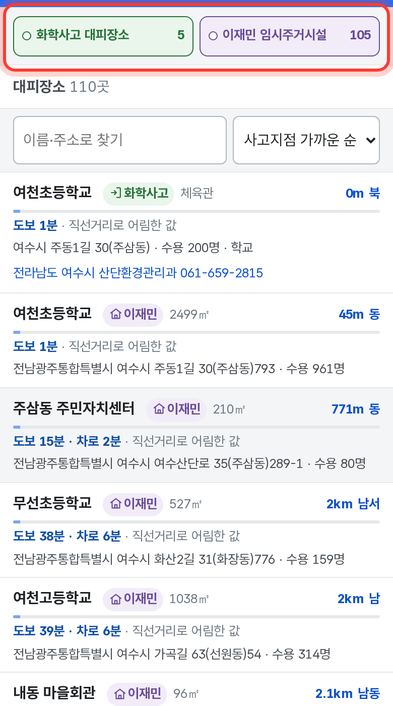
두 층 나눠 보기
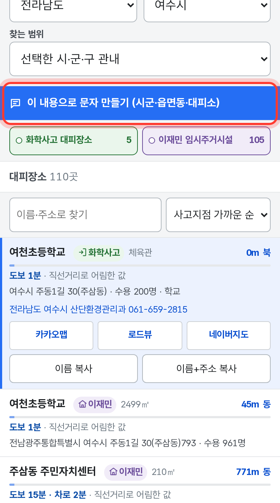
문자로 넘기기
흐름 2 주민대피 문자생성기 — "주민에게 알리기"
카드 02(또는 흐름 1에서 넘어옴) → 알림 종류: 실내대피 · 도로 우회 · 주민소산(대피명령)
한 화면에 한 묶음씩: 사고유형 → 발송 정보 → 사고 위치 → 문자 받을 지역 → 사고물질(460종에서 찾기) → 대피장소
필수 칸이 다 차면 승인 표준문안 그대로 문안이 나오고 글자수(긴급재난문자 90자 기준)를 함께 표시
복사 → 문자 발송시스템에 붙여 넣기. 빈 필수 칸이 있으면 문안을 만들지 않고 채울 칸을 알려 줌
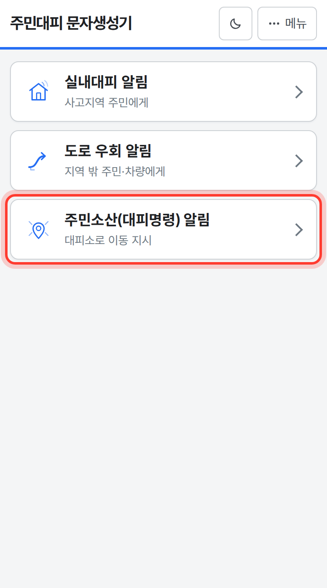
알림 고르기
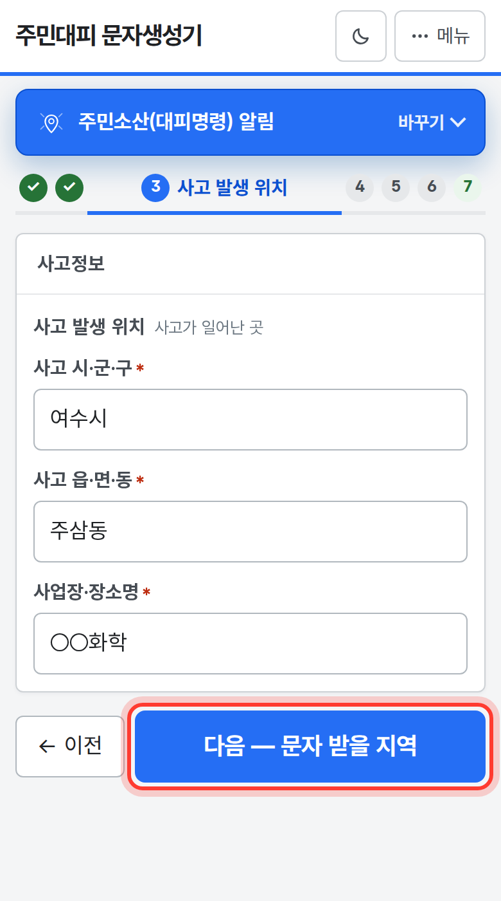
한 묶음씩 채우기
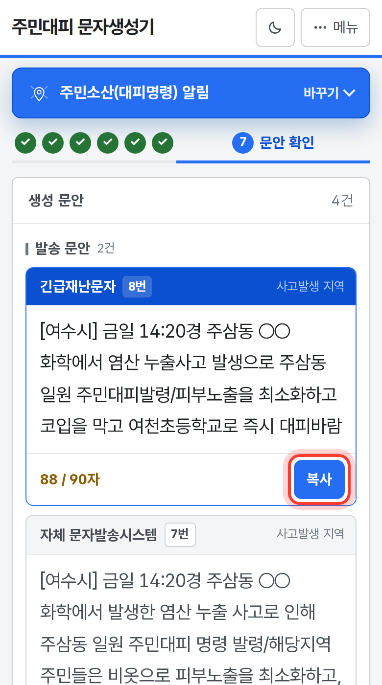
문안·복사
흐름 3 방제 물품·장비 찾기 — "흡착포, 어디에 있지?"
카드 03 → 업체 섭외(폐기물·폐수를 맡길 곳 · 중장비 · 독성가스 회수) 또는 방제물품 찾기
필요한 물품 흡착포 누르고 다음
사고지점: 주소·사업장 이름·지도 찍기·지금 내가 있는 곳 중 하나
지도와 가까운 순 목록 — 아래 「아래로 내려 목록 보기」 안내를 누르면 목록으로
줄을 누르면 세부 창: 전화번호(가장 크게) → 보유 물품·수량 → 주소. 여러 곳을 동원 목록에 담아 한꺼번에 복사
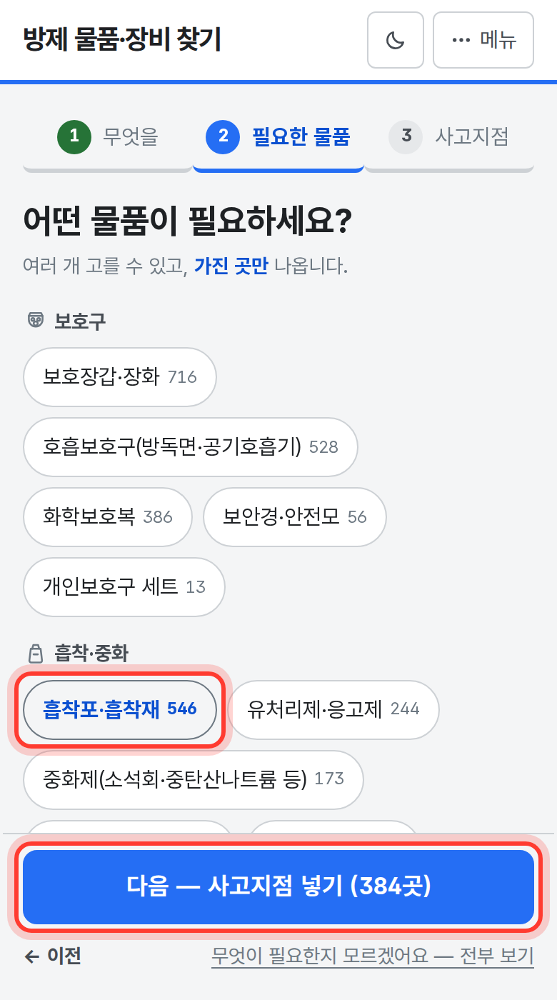
물품 고르기
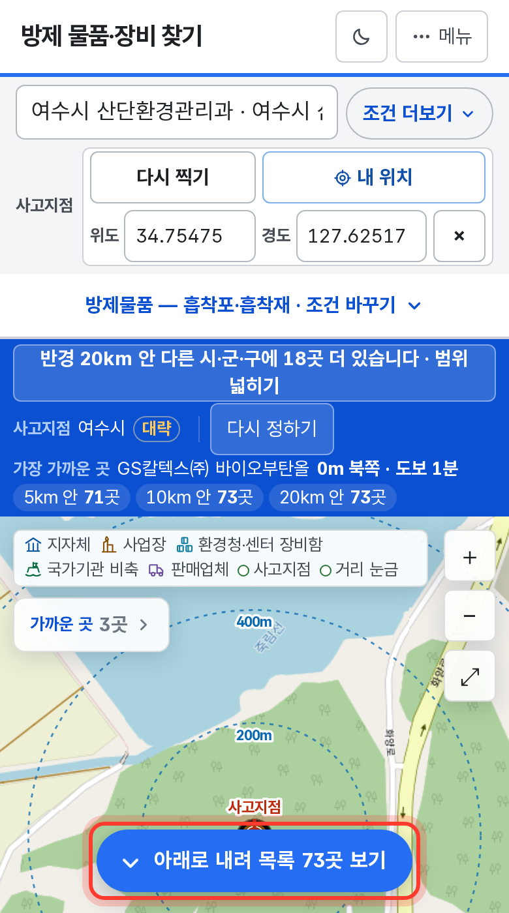
지도·목록 안내
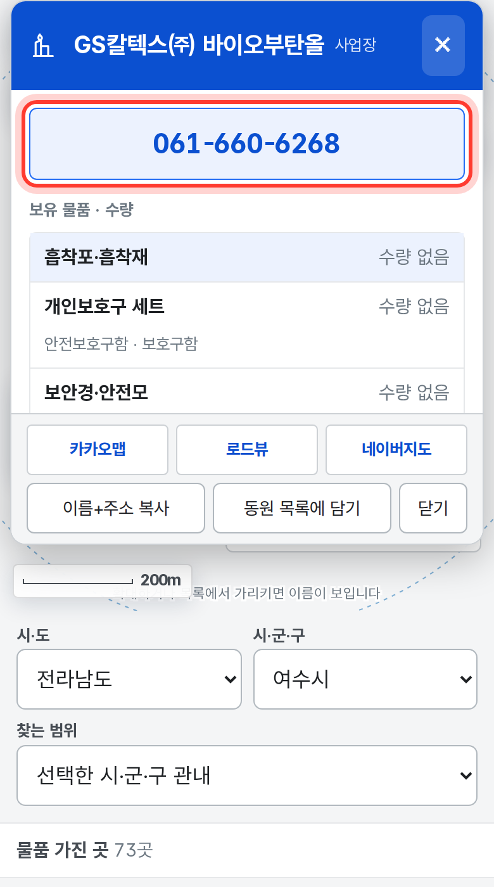
연락처·수량
흐름 4 현장 안전거리 확인 — "내가 선 자리는?"
카드 04 → 물질 입력(예: 암모니아) → 사고지점: 지도 찍기 · 내 위치로 찍기 · 사업장 이름
유출 규모(소·대규모)는 현장이 고름 · 바람이 불어오는 쪽은 나침반으로 · 낮·밤은 그 자리 일출·일몰로 저절로
지도에 초기이격거리(사고지점 둘레 원)와 방호활동 구역(바람 따라 퍼지는 쪽)이 그려짐 — 물질정보 460종의 ERG 거리
「내 위치 확인」: 움직이는 동안 초기이격거리 안 · 방호활동 구역 안 · 두 구역 밖을 사실대로 표시. 지도를 누르면 그 자리도 확인
「상황 공유」: 같은 상황을 링크 하나로 문자·메신저에 보냄 → 받은 사람이 열면 같은 구역(서버 없음 · 내 위치는 담지 않음)
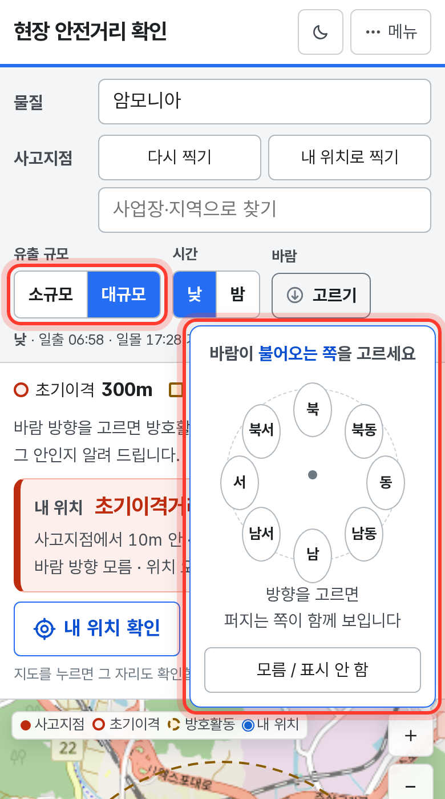
규모·바람 고르기
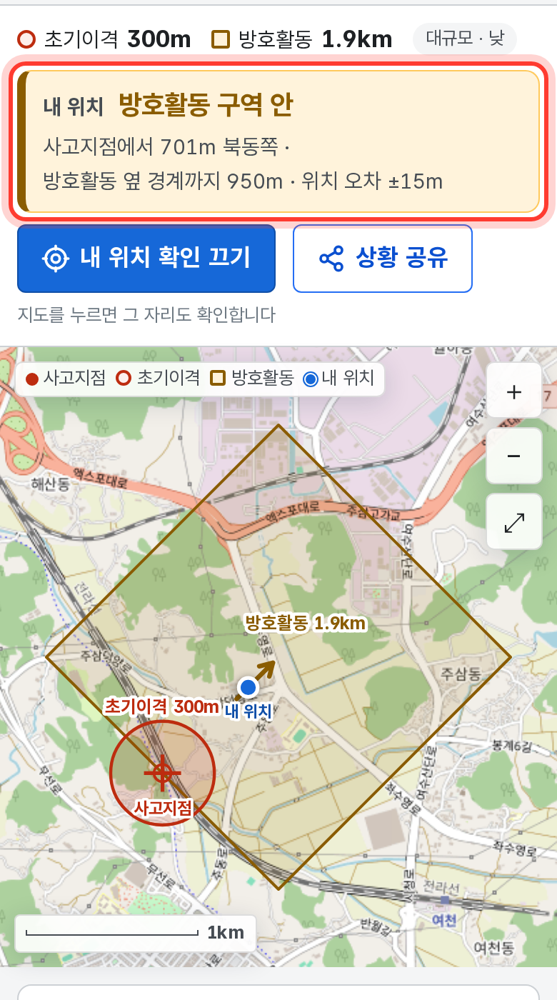
구역 안인지
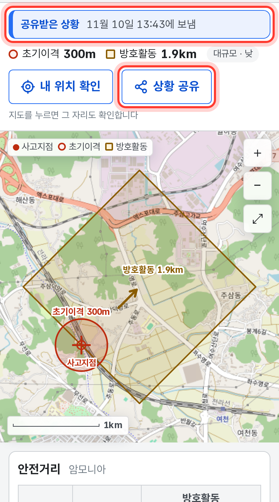
받은 사람 화면
알려진 제약 사항
서비스는 판단하지 않습니다 — 어느 대피장소로 보낼지, 어느 업체를 부를지는 담당자가 정합니다. 서비스는 자료를 모아 가까운 순으로 보여 줍니다
어림값은 어림값이라고 표시 — 거리는 직선거리, 도보시간은 그 거리로 어림한 값입니다. 방제자원 위치는 주소로 잡은 어림 좌표라 지도에서 속이 빈 마커로 구분합니다
인터넷이 필요한 기능 — 배경지도 · 주소·장소 검색 · 도보 경로(업무망 PC용 단일 파일에는 없음)
자료의 한계 — 임시주거시설 원자료에 관리기관·전화가 없어 비워 둠(지어 넣지 않음) · 방제물품은 표준 27가지로 묶어, 세부 종류(예: 유흡착포/화학흡착포)는 세부 창의 원래 이름으로 확인 · 자료 기준일이 기관마다 달라 화면에 기준일을 표시
04 의 구역은 확산 모델링이 아닙니다 — 물질정보에 적힌 ERG 참고 거리를 그린 것으로, 바람·지형·용기 크기에 따라 실제와 다를 수 있습니다(화면 자료 출처 창에도 적음). 바람 방향을 고르지 않으면 방향을 정할 수 없어 거리만 점선 원으로 보여 줍니다. 물질정보에 없는 조합은 「자료에 없음」으로 적고 다른 값을 빌려 오지 않습니다
내 위치는 휴대전화 위치 기능(실내 오차 큼)을 쓰며 화면 밖으로 보내지 않습니다 · 상황 공유 링크는 사이트 주소로 만들어지므로, 사이트가 닫히면 업무망 PC(파일)에서 보낸 링크는 열리지 않습니다
행정경계선은 통계청 센서스 경계(2018) 단순화본으로 법적 경계가 아닙니다
재배포 제한 구성요소 없음 — 외부 라이브러리·프레임워크 미사용. 글꼴 Pretendard GOV(SIL 오픈 폰트 라이선스), 디자인은 정부 디자인 시스템(KRDS) 토큰, 배경지도 브이월드·OpenStreetMap(출처 표시)
개발 경위 요약
문제 인식 — 화학사고가 나면 지자체 담당자는 짧은 시간 안에 ① 주민 대피장소를 정하고 ② 재난문자를 보내고 ③ 방제 물품·장비를 구하고, ④ 현장에 나간 사람은 자기 자리가 안전거리 안인지 확인해야 합니다. 그런데 필요한 자료가 기관마다 엑셀·한글·PDF·스캔 허가증으로 흩어져 있어(방제자원 원자료만 3,865곳 · 8,266줄) 사고 현장에서 바로 찾기 어렵습니다.
접근 방식
사고지점 하나로 네 가지를 — 같은 사고지점에서 대피장소를 찾아 고른 곳을 문자로 바로 넘기고, 방제자원도 가까운 순으로 찾고, 현장 안전거리를 그려 내 위치와 견줍니다(04 → 01·02 로 사고지점·물질을 넘김)
휴대전화 먼저 — 현장에서 꺼내 쓰는 도구. 손가락 크기 단추, 한 화면에 한 가지씩, 링크·QR 하나로 열기
AI 신뢰성 — 판단은 사람이 — 자료를 모아 보여 줄 뿐 단정하지 않고, 어림값은 어림값이라 적고, 없는 값은 지어내지 않습니다
개인정보 제외 — 업체 담당자 실명·휴대전화를 걷어내고 대표번호만. 배포 폴더를 만들 때 기계로 다시 검사
과정 — 담당 공무원이 AI 코딩 도구로 직접 개발 → 원내 자료·공공데이터 정리 → 2026 AI프렌즈 프로젝트 결과 제출(9월) → 시범운영·만족도 조사 → 휴대전화 화면 중심으로 다듬기(10~11월) → 04 현장 안전거리 확인 · 상황 공유 추가(11월)
시범운영 만족도 조사 (응답 61명) — 만족 이상 72.1%(44명) · 사용이 쉬웠다 63.9%(39명) · 업무에 도움 70.5%(43명, 도움이 안 된다 0명) · 실제 사고 대응에 활용 5명.
많이 쓴 기능: 주민 대피장소 47명 · 방제 물품·장비 46명 · 문자생성기 28명(복수 응답 58명).
개선 의견(정보 보완·최신화 19명, 방제물품 세분화 등)은 다음 단계 과제로 두었습니다.
※ 시연영상 [시연영상]_{{기관명}}_{{팀명}}.mp4 — 위 흐름 1~4와 상황 공유(링크를 받아 여는 장면까지)를 휴대전화 화면으로 이어서 보여 줍니다(예시 상황 · 업체명·전화번호는 흐리게 가림).